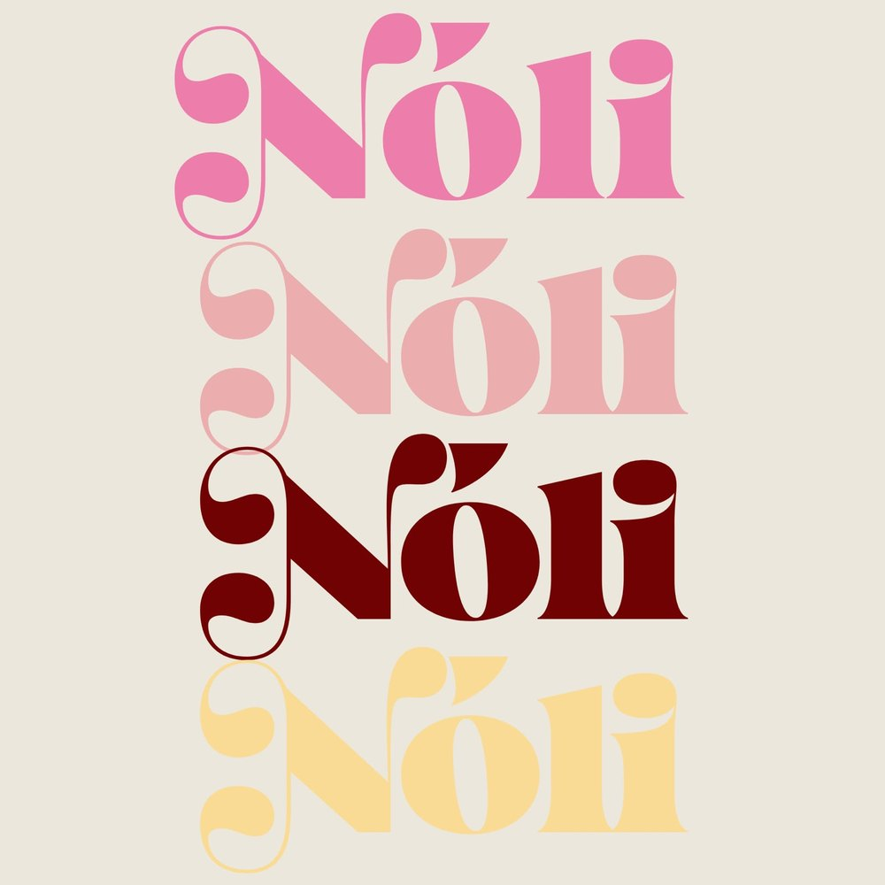

@atelie_noli · ateliê de cerâmica fria
Peças modeladas e pintadas à mão, uma a uma. Porta-joias, incensários, porta-copos e muito mais: cada peça sai do ateliê com pequenas marcas de quem fez, e é isso que a torna única.

Feito à mão, devagar, com cor.
A Nóli nasceu da vontade de ter em casa objetos com alma: feitos devagar, com detalhes em dourado e aquele toque de quem modelou com as mãos. Trabalhamos com cerâmica fria, uma massa modelável que seca ao ar, sem forno. Isso permite detalhes delicados e peças leves e cheias de textura.
Tudo é modelado, lixado, pintado e selado no ateliê. Por isso, nenhuma peça é igual à outra.
- ✺ Modelado à mão
- ✺ Pintado peça a peça
- ✺ Selado com verniz
Do mural para a sua casa
- 1
Escolha
Toque no ♥ para salvar as peças que você amou e monte a sua pasta.
- 2
Chame no WhatsApp
Na peça, toque em “Encomendar” e a mensagem já vai pronta, com o nome e a cor.
- 3
Produção
Cada peça leva de 7 a 15 dias para ficar pronta, porque seca e é pintada com calma.
- 4
Entrega
Retirada combinada ou envio por correio, bem embalado.
Cuidados com a cerâmica fria
☁︎Limpe com pano seco ou levemente úmido.
☂︎Evite água em excesso: nada de lavar ou deixar de molho.
☼Evite sol forte direto por muito tempo.
✿Incensários: tire as cinzas com um pincel macio ou pano seco.